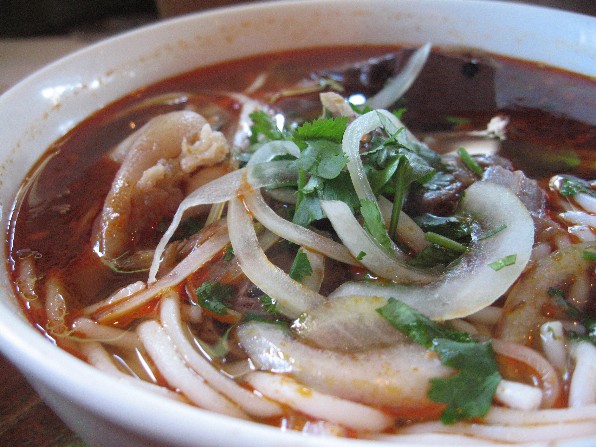

Home
Bun Bo Hue

Provided by
Wikimedia Commons
Description
Traditional Vietnamese noodle soup
Ingredients
Beef bone
Beef shank
Oxtail
Pork hocks
Hue pork sausage
Block of pork blood
Sate
Dried rice noodle
Ginger
Garlic
Onion
Lemongrass
Banana flower
Bean sprouts
Mint
Basil
Lime
Water
Fish sauce
Sugar
Salt
Monosodium glutamate (MSG)
Korean chile powder (gochugaru)
Cooking wine
Steps
Clean the meat with salt water
Boil meat in hot water and cooking wine to release the dirt
Steam the beef bone, beef shank, oxtail, and pork hocks for two hours
Add sugar, salt, MSG, and lemongrass in the beef pot
Boil the pork blood with a little bit of garlic in a separate pot
Add a drizzle of oil, garlic, onion, grinded lemongrass, and Hue shrimp paste on a pan until aromatic, then add korean chile powder
Put the seasoning mixture into the beef pot
Boil noodle in a separate pot
Prepare the dishes
Add noodles, diced beef shank, oxtail, pork hocks, Hue pork sausage, block of pork blood, diced onions, and pour the beef stock into the bowl
Serve with the Bun Bo Hue bowl with a side of vegetable platter